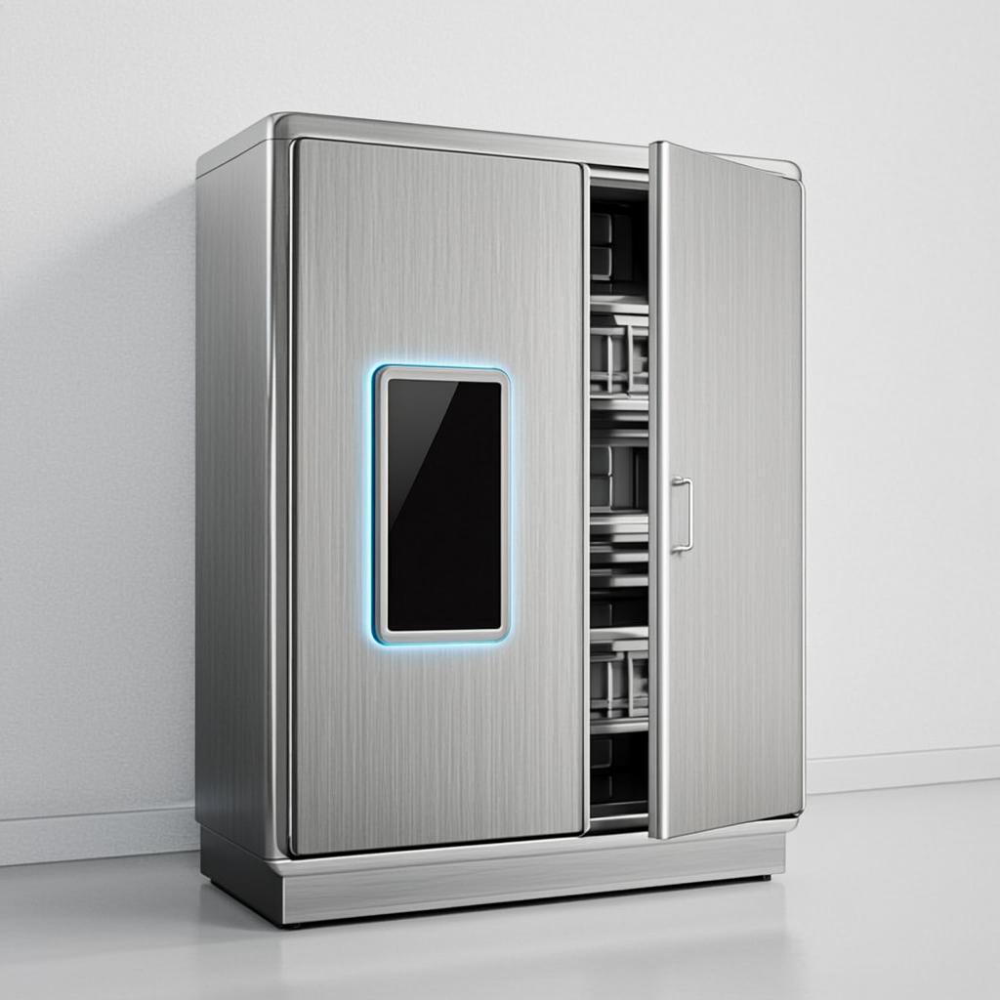
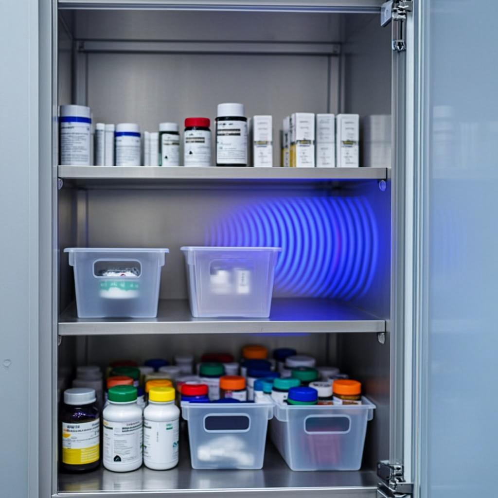
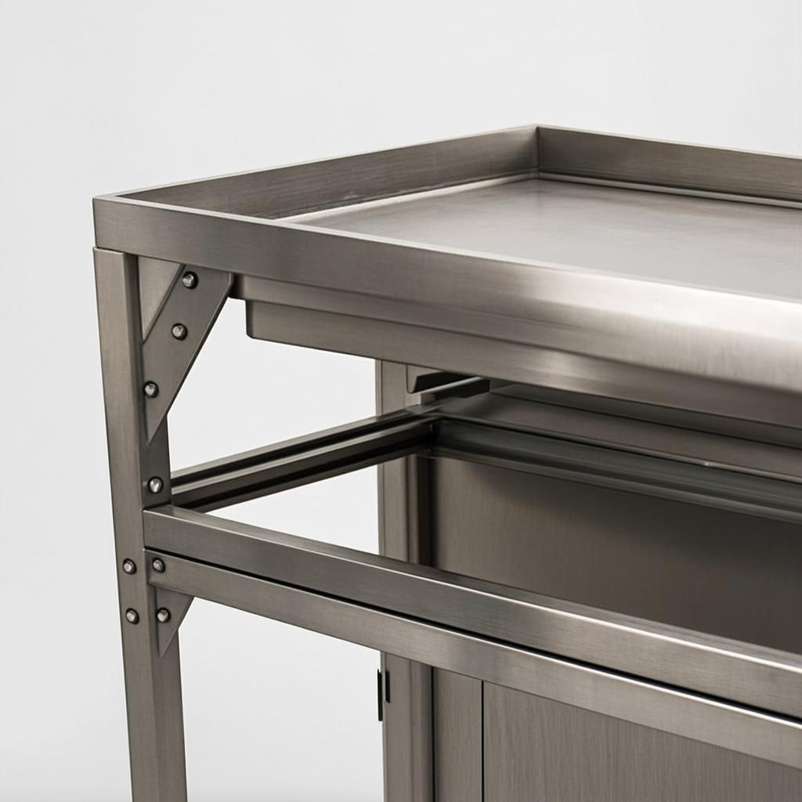
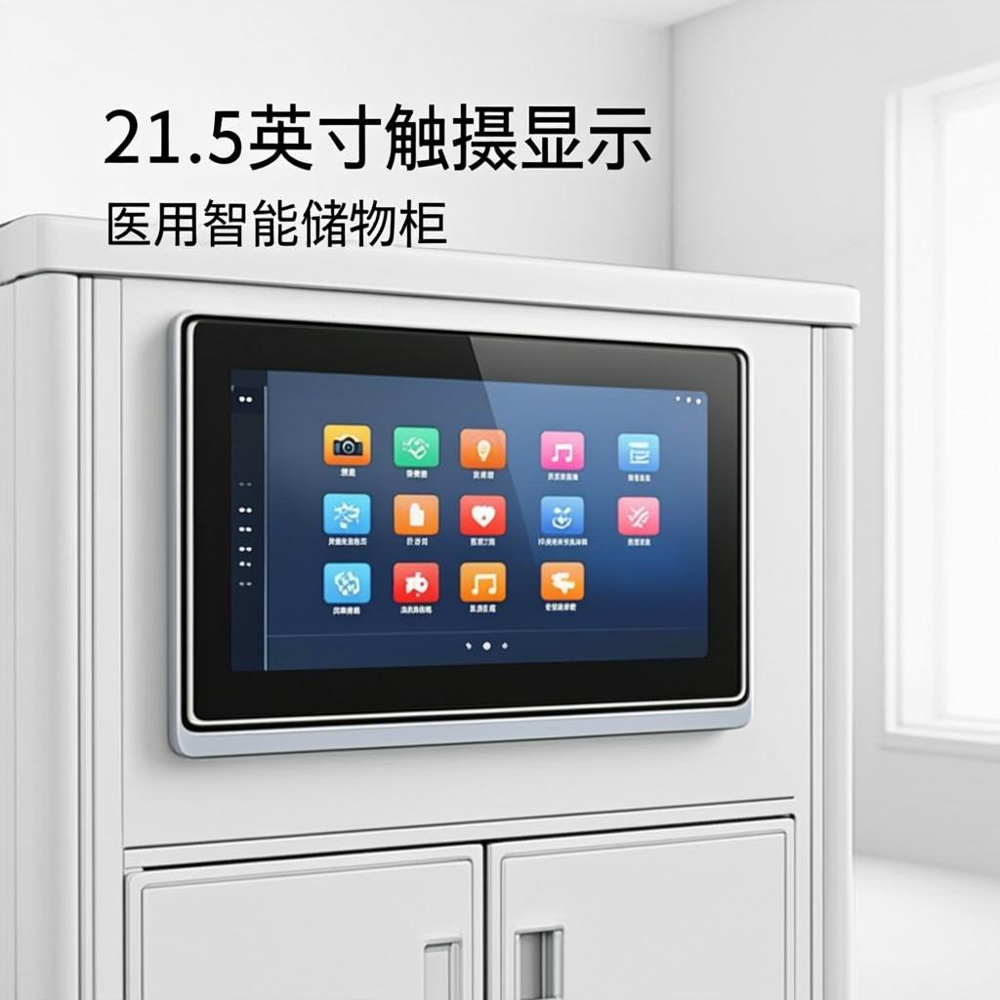
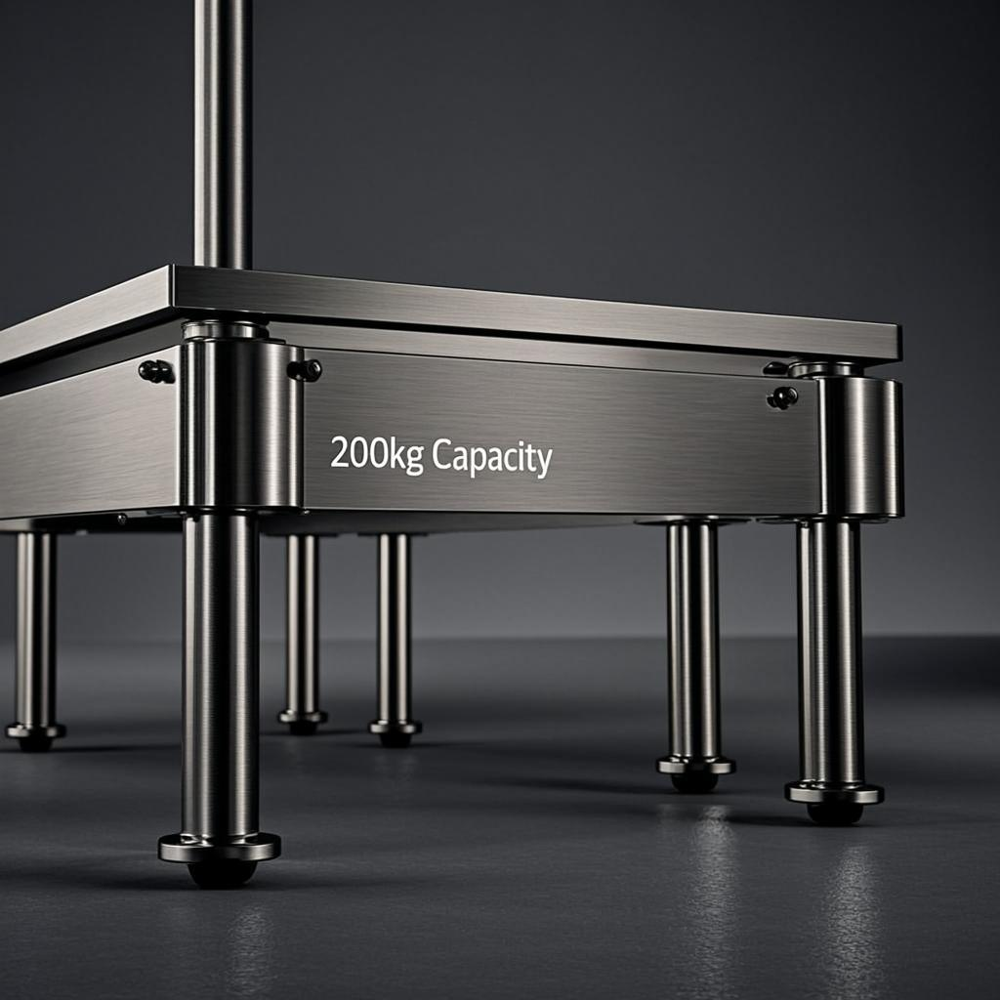
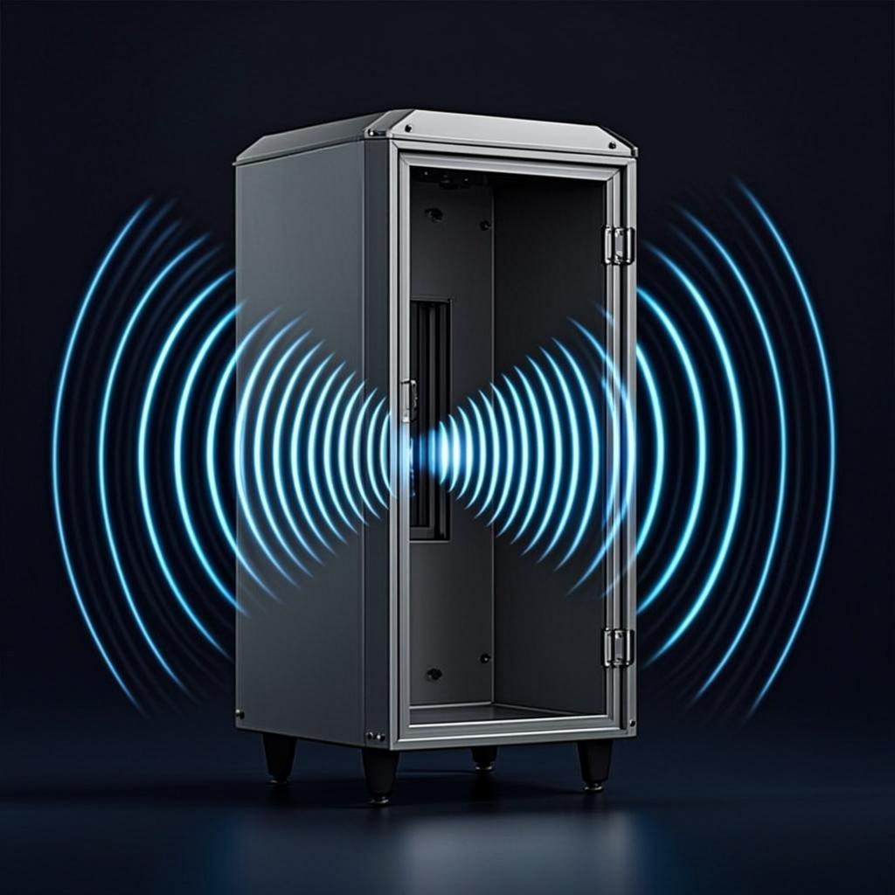

Distribuido en Argentina · Sede en Buenos Aires
Gabinete Médico RFID
Almacenamiento inteligente para activos médicos críticos.
- ANMAT
- FDA 21 CFR Part 11
- HIPAA
- ISO 18000-6C

Inteligencia estéril. Cero compromisos.
Cada ítem trazado, cada escaneo confiable.
El gabinete Cykeo mantiene los consumibles quirúrgicos bajo llave, registrados y fáciles de rastrear. Doble cámara más RFID maneja 400 ítems con precisión del 99%, reduciendo horas de personal y errores. Funciona en salas estériles, compatible con Windows y Android, y cumple los requisitos de auditoría ANMAT y FDA.
40%
menos tiempo de preparación de quirófano
"El Hospital Italiano de Buenos Aires redujo 40% el tiempo de preparación de quirófano usando este sistema. Todos los reportes de uso de implantes son automáticamente compliant con ANMAT y HIPAA."
— Caso real documentado en hospitales de Argentina
- 99% precisión de inventario
- 5s escaneo completo
- 400 ítems en simultáneo
- IP54 certificación ambiental
Características y especificaciones
Composición modular en imágenes: integración clínica, ingeniería de precisión y números clave del gabinete RFID Cykeo.







El rendimiento del producto se basa en pruebas en ambiente controlado. Según el entorno, los resultados pueden variar.

Cada escaneo, trazado.
Conectividad WiFi y 4G mantiene alertas en vivo. Siempre sabés qué entra y qué sale, sin demoras, sin ítems perdidos. Control directo, sin complicaciones.
Preguntas frecuentes
La pantalla de 21.5″ funciona como centro de control. Escaneos completos de inventario en segundos. Packs vencidos resaltan en rojo en pantalla. Se pueden asignar ítems a cirujanos específicos arrastrándolos con sus credenciales RFID. El Hospital Italiano de Buenos Aires redujo 40% el tiempo de preparación de quirófano usando este sistema, y todos los reportes de uso de implantes son automáticamente compliant con ANMAT y HIPAA.
Sí. Las antenas están calibradas para leer a través de 12mm de vidrio, combinadas con tags RFID anti-metal específicos para implantes de titanio. El boost de señal se activa cuando las puertas detectan proximidad. Hospitales reportan 99%+ de precisión incluso escaneando cientos de implantes sin abrir el gabinete.
Todo está en capas. Los escaneos biométricos mantienen fuera al personal no autorizado, cada acción queda registrada en memoria cifrada, y la información del paciente se enmascara automáticamente en reportes exportados. Una clínica en Buenos Aires pasó una auditoría ANMAT sin observaciones usando este sistema, con cero violaciones de trazabilidad.
¿Necesitás una solución a medida?
Enviá tus requisitos y datos de contacto válidos. Nuestros ingenieros entregan una solución personalizada en 24 horas.
Gabinetes médicos RFID con precisión del 99% y compliance ANMAT/FDA. Distribución oficial en Argentina para hospitales, farmacias y laboratorios.
Hablemos
Transformá tu gestión médica
- Ingeniería especializada en cada implementación
- Demos transparentes, sin sorpresas
- Seguridad y accesibilidad desde el diseño (WCAG 2.1 AA)
Solicitud enviada
Gracias. Nuestro equipo de Argentina se contactará a la brevedad para coordinar la demostración.